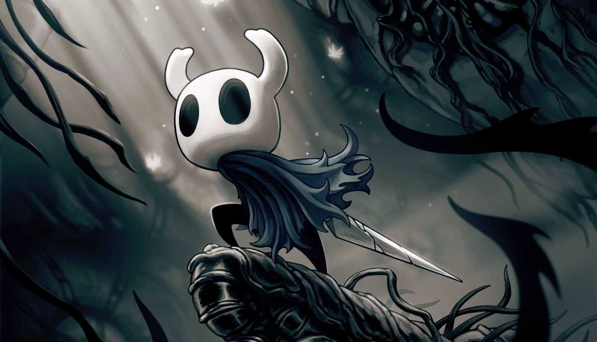

Hollow Knight

Hollow Knight es un juego indie lanzado en 2017 por la empresa desarrolladora Team Cherry que combina elementos de un juego de plataformas y un metroidvania en un mundo de insectos desolados.

Hollow Knight es un juego indie lanzado en 2017 por la empresa desarrolladora Team Cherry que combina elementos de un juego de plataformas y un metroidvania en un mundo de insectos desolados.